시각디자인기사 (2017-05-07 기출문제)
1과목: 시각디자인론
1. 일러스트레이션에 대한 설명 중 틀린 것은?
- 메시지를 전달하기 위한 그림이다.
- 설명적인 그림이다.
- 예술적 표현을 가장 중요시 한 그림이다.
- 주로 잡지나 서적에 많이 사용된다.
(정답률: 80%)

2. 다음 중 디자인보호법에 관한 일반적 설명으로 틀린 것은?
- "디자인일부심사등록"이란 디자인등록출원이 디자인 등록요건 중 일부만을 갖추고 있는지를 심사하여 등록하는 것을 말한다.
- 한 벌의 포크, 나이프, 숟가락처럼 함께 사용되는 물품은 함께 출원할 수 있다.
- 인터넷 홈페이지나 각종 프로그램의 GUI나 아이콘 등은 디자인출원을 통해 보호받을 수 있다.
- 아바타, 애니메이션과 같은 그래픽이미지는 영상화면에 나타나는 것으로 디자인출원 대상이 아니다.
(정답률: 87%)
3. 아이디어 발상의 창조적 기법 중 하나인 유추법(Synectics)과 관련이 없는 것은?
- 직접적 유추
- 의인적 유추
- 발전적 유추
- 상징적 유추
(정답률: 58%)
4. 기업경영에는 제품 등의 4가지 요소를 포함하는 마케팅계획이 필요하다. 이 4개의 요소는 각각 독립적이면서도 서로 연결과 상호지원이 필요함을 나타내는 용어는?
- Full Marketing
- Marketing Mix
- Total Marketing
- Marketing Promotion
(정답률: 76%)
5. TV 광고에서 프로그램과 프로그램 중간에 삽입되는 광고는?
- 스파트광고
- 블럭광고
- 로컬광고
- 네트워크광고
(정답률: 70%)
6. 디자인의 분류가 아닌 것은?
- 프로덕트 디자인
- 안티(Anti) 디자인
- 커뮤니케이션 디자인
- 환경 디자인
(정답률: 77%)
7. 다음 중 옥외광고에 해당되는 것은?
- 빌보드(billboard)
- 퍼블리시티(publicity)
- POP(point of purchase)
- DM(direct mail)
(정답률: 69%)
8. Green Marketing의 개념과 가장 거리가 먼 것은?
- Recycling
- Reuse
- Mass production
- Reduce
(정답률: 73%)
9. 상표등록시 등록절차가 맞는 것은?
- 출원 → 심사 → 출원공고 → 등록결정 → 등록
- 출원 → 출원공고 → 심사 → 등록결정 → 등록
- 출원 → 등록결정 → 출원공고 → 심사 → 등록
- 출원 → 심사 → 출원공고 → 등록 → 등록결정
(정답률: 47%)
10. 엉뚱한 발상과 비상식적인 표현으로 강한 인상을 남기는 시각표현 수법은?
- Mind Share
- Visual Scandal
- Super Graphic
- Isotype
(정답률: 75%)
11. 아르누보(Art Nouveau)에 관한 설명 중 옳은 것은?
- 아르누보는 과거의 역사적 양식을 계승, 발전시키는 운동이다.
- 윌터 그로피우스(W, Gropius)에 의해 주창되어 전 유럽에 영향을 준 운동이다.
- 아르누보는 가구, 의상, 생활용품 등 기계를 거부하는 수공예의 복귀운동이다.
- 아르누보의 시각적 특징은 우아한 식물형의 유기적인 선이다.
(정답률: 74%)
12. 디자인 권리 확보 및 경쟁사 모방으로 부터의 방어를 목적으로 디자인출원이 이루어지는 과정은?
- 렌더링
- 사후관리
- 목업
- 아이디어스케치
(정답률: 75%)
13. 자연미에 대한 설명으로 적합하지 않는 것은?
- 자연미란 자연적 사물과 인공적 사물의 조화를 의미한다.
- 통속적으로 인조적이지 않은 미 즉, 자연경관과 같은 풍경미를 의미한다.
- 대자연의 미나 새, 꽃 또는 인간의 육체의 아름다움 등을 포함한다.
- 미학적으로는 예술미와 대립되는 명사이다.
(정답률: 59%)
14. 컴퓨터에 그림이나 도형의 위치관계를 부호화하여 입력하는 장치로서 절대좌표를 표시할 수 있는 가장 적절한 것은?
- 디지타이저(Digitizer)
- 마우스(Mouse)
- 키보드(Key board)
- 그래픽 보드(Graphic board)
(정답률: 68%)
15. 19세기의 초기 도입단계의 사진 및 사진 제판술의 보급과 발전이 당시의 일러스트레이터에게 미친 영향은?
- 대부분이 그래픽 디자이너로 일부로 순수화가로 직업을 전환하였다.
- 한동안은 주로 사진을 능가하는 정밀한 일러스트레이션만이 살아남았다.
- 사진의 급속한 확대 보급에 따라 일시적으로 전문적인 직업 자체가 소멸되었다.
- 사실의 기록으로부터 환상과 허구 또는 상상의 영역으로 소재와 표현 내용이 변화되었다.
(정답률: 75%)
16. 1944년 윌리엄 고든에 의해 개발된 것으로, 서로 관련이 없어 보이는 것들을 조합하여 새로운 것을 도출해내는 아이디어 발상법은?
- 브레인스토밍
- 시네틱스법
- 입출력법
- 체크리스트법
(정답률: 74%)
17. 아이디어 발상 시 고려해야할 사항 중 가장 거리가 먼 것은?
- 어떤 이미지의 디자인을 생각하는가?
- 소비자의 요구에 어떻게 대응하는가?
- 경쟁제품을 의식하고 있는가?
- 광고에 기용될 배우는 누가 적합한가?
(정답률: 82%)
18. 다음 중 상표의 기능이 아닌 것은?
- 품질보증 기능
- 광고선전 기능
- 재산적 기능
- 현상표시 기능
(정답률: 34%)
19. 계층구조는 복잡한 관계를 시각화하고 이해하는데 필요한 가장 단순한 구조이다. 이에 해당하지 않은 것은?
- 책의 개요, 다단계 소프트웨어 메뉴, 분류, 도표 등이 있다.
- 요소들 간의 계층 관계 지각은 주로 요소들 간의 상대적 위치와 함수 관계가 성립한다.
- 기본적으로 트리(tree), 네스트(nest), 계단(stair) 등의 표현방법이 있다.
- 시스템에 대한 지식을 늘리지 못하는 단점이 있다.
(정답률: 90%)
20. 심벌의 아이솔레이션(isolation) 범위를 규정하는 주된 이유는?
- 시인성 확보
- 접근성 유지
- 친근감 형성
- 통일성 구성
(정답률: 70%)
2과목: 조형심리학
21. 도형의 중심선을 표시하는 데 사용되는 선은?
- 파선
- 1점 쇄선
- 굵은 실선
- 가능 실선
(정답률: 56%)
22. 다음 중 군화(Grouping) 법칙에 대한 요소로 틀린 것은?
- 형상의 유사성
- 명도의 유사성
- 공간의 유사성
- 속도의 유사성
(정답률: 43%)
23. 다음 중 지각항상성(perceptual constancy)과 무관한 것은?
- 석탄은 실내에서나 실외에서나 검게 보인다.
- 파란색 바탕에서는 노란색이 항상 가장 선명하게 보인다.
- 조명의 색온도가 변해도 물체의 표면색이 일정해 보인다.
- 보는 위치가 달라져도 대상을 동일하게 지각한다.
(정답률: 73%)
24. 다음 중 다각 투시도법으로 인물과 대상물을 표현했던 미술은?
- 바로크
- 이집트
- 르네상스
- 로코코
(정답률: 73%)
25. 다음 그림은 무엇을 하기 위한 작도인가?
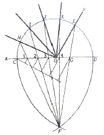
- 각의 이동
- 각의 n등분
- 평행선 긋기
- 원 O에 내접하는 정n각형
(정답률: 75%)
26. 그림 윗쪽 수평선이 아래쪽의 수평선 보다 길어 보이는 착시는?
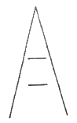
- 폰조의 착시
- 뮬러 - 리어의 착시
- 포겐도르프의 착시
- 헤링의 착시
(정답률: 57%)
27. 바탕에 대해 도형이 되기 쉬운 조건에 해당하지 않는 것은?
- 시야의 중앙을 점하는 것이 도형이 되기 쉽다.
- 큰 것이 작은 것보다 유리하다.
- 둘러싸일 영역보다도 둘러싸인 영역이 도형이 되기 쉽다.
- 군화된 것은 도형이 된다.
(정답률: 73%)
28. 디자인의 조건 중 감성소비시대에 특히 주목받는 가치는?
- 실용성
- 심미성
- 경제성
- 기능성
(정답률: 83%)
29. 사람의 눈에 원추체가 밀집해 있는 곳을 지칭하는 말은?
- 동공
- 망막
- 중심와
- 맹점
(정답률: 54%)
30. 점에 대한 기하학적인 정의가 가장 올바른 것은?
- 눈에 보이지 않으며 비물질적인 존재이다.
- 최소의 원으로서 지각된다.
- 불규칙적인 형으로서 최소 형태를 갖는다.
- 어떤 형이던지 확대하면 점이 된다.
(정답률: 44%)
31. 그림과 같은 평면도법은?
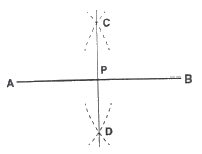
- 직선의 n등분
- 수직선 긋기
- 직선 끝에서의 수직선
- 직선의 2등분
(정답률: 61%)
32. 보이지 않는 부분을 표시하는 선은?
- 실선
- 외형선
- 은선
- 중심선
(정답률: 69%)
33. 미(美)와는 대립되지만, 미를 부각시켜주며 그와 더불어 논의되어 온 것은?
- 선(善)
- 추(醜)
- 악(惡)
- 진(眞)
(정답률: 81%)
34. 일직선 상에 하나의 원이 굴러갈 때 그리는 다음 그림과 같은 곡선은?
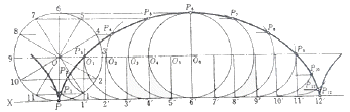
- 축폐선(evolute)
- 와선(sparial)
- 사이클로이드(cycloid)
- 신개선(involute)
(정답률: 84%)
35. 항상성의 정도가 달라지기 위한 조건에 해당되지 않는 것은?
- 대상의 특성
- 사야의 조건
- 드로잉의 기법
- 관 찰자의 개성
(정답률: 44%)
36. 두 눈이 물체를 볼 때 두 눈 사이의 거리만큼 약간 다른 시야를 보게 되는 데서 일어나는 현상은 무엇인가?
- 양안시차
- 야맹증
- 은폐율지
- 음영효과
(정답률: 92%)
37. 아래 그림에서 사각형 안의 6개의 선들이 3개의 그룹으로 보일 때 이것은 군화의 법칙 중 어디에 해당 되는가?
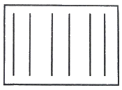
- 근접의 법칙
- 유사의 법칙
- 폐쇄의 법칙
- 연 속의 법칙
(정답률: 85%)
38. 시각적 질감을 설명한 것 중 옳은 것은?
- 물체의 빛에 대한 반응이다.
- 물체의 구조에 대한 반응이다.
- 면직물 표면의 특성만을 의미한다.
- 직접 만져서 확인할 수 있어야 한다.
(정답률: 86%)
39. 리듬에 있어서 가장 기본적인 조건은?
- 조화
- 강조
- 대칭
- 반복
(정답률: 82%)
40. 아래 그림의 작도법은?
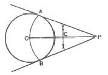
- 원주 밖의 1점에서 원에 접선 그리기
- 두 개의 직선에 접하는 원 그리기
- 원의 중심 구하기
- 원주와 같은 길이의 직선 그리기
(정답률: 49%)
3과목: 광고학
41. 다음 중 매스커뮤니케이션 과정의 요소에 속하지 않는 것은?
- 송신자
- 수신자
- 메시지
- 판매
(정답률: 85%)
42. 광고의 설득적 기능에 해당되지 않는 것은?
- 다른 회사 고객에 대한 견제
- 충성스런 고객의 유지
- 고객의 상실 방지
- 새로운 고객의 획득
(정답률: 88%)
43. 광고에 크리에이티브 콘셉트를 구상하는데 있어서 토렌스의 창조적 사고 요소가 아닌 것은?
- 순발력
- 통일성
- 독창성
- 유연성
(정답률: 65%)
44. 광고, DM, 판매촉진, PR 등 다양한 커뮤니케이션 수단들의 전략적인 역할을 비교, 검토하고, 명료성과 일관성을 높여 최대한의 커뮤니케이션 효과를 제공하기 위해 이들 다양한 수단을 통합하는 총괄적 계획은?
- DM
- IMC
- 4P
- CPM
(정답률: 46%)
45. TV광고 아이디어를 구체화하고 광고주에게 크리에이티브 아이디어를 설명할 때 광고주의 이해를 돕기 위해 작성하는 것은?
- visual chart
- storyboard
- slogan
- illustration
(정답률: 82%)
46. 배너 광고의 단점을 해결하기 위해 배너에 멀티미디어 효과를 첨부시킨 광고는?
- Benefit 배너광고
- Rich Media 배너
- E-mail 광고
- 배너웨어
(정답률: 65%)
47. 인터넷 마케팅의 정의가 아닌 것은?
- 가상공간에서 상호작용이 가능한 쌍방 커뮤니케이션이다.
- 음성, 화면, 동화상 등 다양한 정보를 쌍방적으로 표현할 수 있다.
- 개인이나 조직이 인터넷을 이용하여 행하는 쌍방향 커뮤니케이션이다.
- 인터넷에 필요한 소프트웨어를 대량으로 판매하는 마케팅 형식이다.
(정답률: 86%)
48. 마케팅(Marketing)의 정의는?
- 제품계획, 가격책정, 유통과 판매 등의 촉진과 상호 연관된 기업 활동
- 디자인 목적을 능률적으로 달성하기 위해 디자인에 관한 여러 가지 활동을 계획,조직, 충원, 지휘, 조정 통제하는 활동
- 제품 판매만을 극대화시키기 위한 기업 활동
- 시장 우위를 점유시키기 위해 광고물을 기획, 개발, 제작하는 활동
(정답률: 59%)
49. 매체를 이용한다는 점과 비대면적인 점은 광고와 동일하나, 비용을 지불하지 않고 내용이나 표현이 완벽하게 통제될 수 있으며 광고보다 신뢰도가 높아 수용자의 경계심도 타파할 수 있는 것은?
- 기사홍보(Publicity)
- 선전(Propaganda)
- 공중관계(Public Relations)
- 인적판매(Personal Sale)
(정답률: 66%)
50. 광고회사의 관련부서가 아닌 것은?
- PR부서
- 기획부서
- 상품개발부서
- 제작부서
(정답률: 89%)
51. 다음 중 티저(teaser) 광고에 대한 설명은?
- 사용해 본 사람이 증언을 한다.
- 어떻게 좋은가를 실제로 보여준다.
- 몇 번에 걸쳐 호기심을 자극시킨다.
- 경쟁제품과 비교시킨다.
(정답률: 86%)
52. 마케팅 목표로서 가장 적합한 예는?
- 차기 연도에 브랜드 인지도를 10% 올린다.
- 차기 연도에 광고예산을 12% 높인다.
- 차기 연도에 생산량을 15% 증가한다.
- 차기 연도에 판매량을 20% 높인다.
(정답률: 72%)
53. 특정한 수단을 통하여 무엇인가 있는 사실을 전달함으로써 많은 사람들의 행동을 일정한 방향으로 진행시키고자 하는 계획적인 활동은?
- Circulation
- Propaganda
- Sales Promotion
- Direct Mail
(정답률: 58%)
54. 광고메시지 표현계획을 마련할 경우, 완성된 상품콘셉트(concept)를 효율적인 커뮤니케이션 콘셉트로 바꾸는 것을 의미하는 것은?
- 마켓 콘셉트의 창출
- 마케팅 콘셉트의 창출
- 프로덕트 콘셉트의 창출
- 크리에이티브 콘셉트의 창출
(정답률: 39%)
55. 대화의 형식을 갖춘 의미의 전달을 뜻하며 전달자는 동시에 수용자의 역할, 수용자는 동시에 전달자의 역할을 하는 커뮤니케이션 방법은?
- 일방적 커뮤니케이션
- 쌍방적 커뮤니케이션
- 다면적 커뮤니케이션
- 다차원적 커뮤니케이션
(정답률: 80%)
56. 광고물의 제작은 다음 중 어느 전략과 가장 직접적인 관련을 맺고 있는가?
- 광고 크리에이티브 전략
- 브랜드 이미지 전략
- 마케팅 전략
- 제품 전략
(정답률: 71%)
57. 다음 중 소비자 행동에 영향을 주는 요인과 가장 거리가 먼 것은?
- 문화적 요인
- 창조적 요인
- 개인적 요인
- 심리적 요인
(정답률: 86%)
58. 다음 중 실사법(實査法)의 방법이 아닌 것은?
- 방문 면접조사법
- 실험법
- 전화 조사법
- 우송법
(정답률: 47%)
59. "문제를 해결하고 기회를 살리기 위해서는 어떠한 층의 소비자 Needs를 어떤 형으로 상품화 할 것인가?" 하는 문제에 직면하게 된다. 이처럼 상품을 구매하여 사용해 주기를 바라는 소비자를 무엇이라고 부르는가?
- 잠재소비자층
- 수요창출층
- 소구대상층
- 유통경로층
(정답률: 52%)
60. DM(Direct Mail)의 특성이 아닌 것은?
- 고객 선택성
- 예산의 비탄력성
- 표현의 자유성
- 시간적 탄력성
(정답률: 66%)
4과목: 색채학
61. 물체의 색을 지각하는 것은 빛의 어떤 성질과 가장 관계가 깊은가?
- 확산
- 투과
- 입사
- 반사
(정답률: 92%)
62. 다음은 빨강, 노랑, 초록, 파랑의 분광분포 곡선이다. 노랑(Yellow)의 분광분포 곡선은?
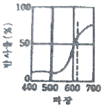
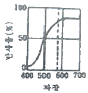
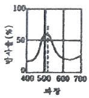
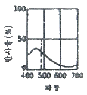
(정답률: 75%)
63. 컬러인화사진은 대부분 어떤 혼색방법을 이용한 것인가?
- 가법혼색
- 평균혼색
- 감법혼색
- 색광혼색
(정답률: 64%)
64. 비트(bit)에 알맞은 내용이 아닌 것은?
- 2의 1승인 픽셀(pixel)은 1비트(bit) 픽셀(pixel)이다.
- 더 많은 비트(bit)를 시스템에 추가하면 할수록 가능한 조합의 수가 늘어나 생성되는 컬러의 수가 증가됨을 뜻한다.
- 24비트(bit) 컬러는 사람의 육안으로 볼 수 있는 전체 컬러를 망라하지는 못하지만 거의 그에 가깝게 표현할 수 있다.
- 디지털 컬러에서 각 픽셀(pixel)은 CMYK의 조합으로 표현된다.
(정답률: 87%)
65. CIE 색도도에 관한 설명 중 틀린 것은?
- 빛의 혼색실험에 기초한 것이다.
- 백색광은 색도도 중앙에 위치한다.
- 순수파장의 색은 바깥 둘레에 위치한다.
- 색도도의 모양은 타원형으로 되어 있다.
(정답률: 50%)
66. 무거운 상품을 가볍게 보이기 위해 포장하려 한다면 색의 어떤 속성을 조정해야 하나?
- 색상
- 명도
- 채도
- 색도
(정답률: 74%)
67. 문,스펜서의 면적효과에 관한 설명 중 틀린 것은?
- N5 순응점을 중심으로 한다.
- 균형점(balance point)에 의해서 배색의 심리적 효과가 결정된다.
- 순응점을 중심으로 높은 채도의 색은 넓게 배색하는 것이 조화롭다.
- 순응점으로부터 지정된 색까지의 입체적 거리는 스칼라 모멘트이다.
(정답률: 47%)
68. 다음 중 강함, 동적임, 화려함 등을 느낄 수 있는 배색은?
- 동일 색상의 배색
- 유사 색상의 배색
- 반대 색상의 배색
- 포 까마이외 배색
(정답률: 93%)
69. 저드(D.M. Judd)의 색채조화론 중 다음 내용이 설명하는 것은?
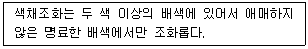
- 질서의 원리
- 비모호성의 원리
- 유사의 원리
- 친근성의 원리
(정답률: 75%)
70. 단색광과 파장의 범위가 틀리게 짝지어진 것은?
- 파랑 : 450~500nm
- 빨강 : 360~450nm
- 초록 : 500~570nm
- 노랑 : 570~590nm
(정답률: 77%)
71. 디자인의 대상이나 용도에 적합한 배색을 적용하고 기능적으로나 심미적으로 효과적인 배색효과를 얻을 수 있도록 미리 설계하는 것은?
- 색채조절
- 색채관리
- 색채응용
- 색채계획
(정답률: 81%)
72. 다음 중 난색계의 특징으로 틀린 것은?
- 따뜻함
- 진출색
- 활동성
- 차분함
(정답률: 92%)
73. 다음 중 회전 혼합과 관계가 없는 것은?
- 가법 혼합
- 색광 혼합
- 색료 혼합
- 중간 혼합
(정답률: 55%)
74. 횃불놀이, TV 나 영화 등에서 나타나는 색의 현상은?
- 정의 잔상
- 부의 잔상
- 연변 대비
- 색상 동화
(정답률: 64%)
75. 다음 중 가장 가벼운 느낌을 주는 배색은?
- 초록 – 검정
- 주황 - 노랑
- 빨강 – 파랑
- 청록 - 초록
(정답률: 85%)
76. 오스트발트(Ostwald) 표색계에 관한 설명 중 틀린 것은?
- 색의 합리적인 계획보다 색채계획이나 색채조화에 장점을 가지고 있다.
- 색상환은 24색상을 원칙으로 한다.
- 최상단은 검정, 최하단은 하양으로 하여 정삼각형을 만들었다.
- W + B + C = 100 이라는 이론이다.
(정답률: 74%)
77. 아파트 건축물의 색채 기획 시 고려해야 할 사항이 아닌 것은?
- 개인적인 기호에 의하지 않고 객관성이 있어야 한다.
- 주변에서 가장 부각될 수 있게 독특한 색채를 사용한다.
- 전체적으로 질서가 있어야 하며 적당한 변화가 있어야 한다.
- 주거민을 위한 편안한 색채 디자인이 되어야 한다.
(정답률: 92%)
78. 비렌(Birren)의 색과 형의 연결로 틀린 것은?
- 빨강 – 정사각형
- 노랑 - 삼각형
- 파랑 – 오각형
- 주황 - 직사각형
(정답률: 62%)
79. 색광을 표시하는 표색계로 심리적이고 물리적인 빛의 혼색 실험결과에 그 기초를 두는 것은?
- 현색계
- 지각색계
- 혼색계
- 물체색계
(정답률: 79%)
80. 다음 중 색광의 표시법과 관련 있는 것은?
- Munsell 표색법
- Ostwald 표색법
- CIE 표색법
- NCS 표색법
(정답률: 65%)
5과목: 사진 및 인쇄제판론
81. 다음 중 피사계심도를 깊게 하는 방법과 가장 거리가 먼 것은?
- 조리개를 조여서 촬영한다.
- 광각렌즈를 사용한다.
- 피사체와 촬영거리를 멀리하여 촬영한다.
- 렌즈의 초점거리를 길게 한다.
(정답률: 34%)
82. 스캐너 사용시 원고드럼 표면과 슬라이드 사이에서 수분의 영향으로 생기는 무지개 모양의 간섭무늬로 습도가 높으면 심하게 발생하는 현상은?
- 헐레이션
- 흑화
- 이레디에이션
- 뉴톤링
(정답률: 33%)
83. 달리고 있는 자동차의 역동감을 표현하기 위한 가장 적절한 촬영 기법은?
- blur
- relief
- panning
- zooming
(정답률: 80%)
84. 네거티브의 농도가 밝게 만들어 인화했을 때 어두운 사진이 되면 콘트라스트가 많이 떨어지는 현상은?
- 적정 노출
- 노출 과다
- 현상 부족
- 현상 과다
(정답률: 58%)
85. 35mm 필름을 상요하는 카메라에서 앞뒤로 배치된 물체의 상대적 크기가 가장 정상적으로 보이게 하는 렌즈의 초점거리는?
- 28mm
- 50mm
- 1⑤mm
- 1000mm
(정답률: 78%)
86. 인쇄기계를 가압방식에 따라 분류할 때 해당되지 않는 방식은?
- 회전식
- 원압식
- 평압식
- 윤전식
(정답률: 74%)
87. 인쇄물에 각각 다른 문자, 사진 등 인쇄물의 내용을 바꾸어 인쇄할 수 있고, 필요한 매수를 즉시 인쇄할 수 있는 방법은?
- 오프셋 인쇄
- 볼록판 인쇄
- 스크린 인쇄
- 디지털 인쇄
(정답률: 87%)
88. 평판의 판재가 갖추어야 할 조건으로 틀린 것은?
- 신축이 적고, 경도가 적당할 것
- 모랫발을 쉽게 세울 수 있을 것
- 화학처리에 의한 제판에 적당하고, 수정이나 불감지화가 쉬울 것
- 현상 후 잔반응이 많을 것
(정답률: 84%)
89. 흑백 현상액의 산화방지를 위해 사용하는 약품은?
- 빙초산
- 메톨
- 탄산나트륨
- 아황산나트륨
(정답률: 72%)
90. 은 화상 일부 또는 전부를 여러 가지 은 화합물을 바꾸거나 은 이외의 금속이나 금속 화합물 또는 색소를 바꾸어 특수효과를 내는 처리과정은?
- 감력
- 조색
- 감색
- 표백
(정답률: 60%)
91. 같은 높이의 판면으로 화학적인 원리에 의해 제판되는 판은?
- 평판
- 볼록판
- 선화판
- 오목판
(정답률: 83%)
92. 일정한계 이상의 외력에 의해 변형이 되고, 그 이후부터 외력과 유동 속도가 비례하는 것을 나타내는 것은?
- 점성
- 탄성
- 요변성
- 소성
(정답률: 33%)
93. 상품 촬영시 유리에 반사되는 빛을 제거하기 위하여 사용하는 필터는?
- PL 필터
- ND 필터
- Soft Focus 필터
- FL 필터
(정답률: 55%)
94. 인쇄 판면이 유연하여 탄력이 있으므로 종이나 헝겊처럼 유연한 소재뿐만 아니라 유리, 금속을 비롯한 딱딱한 판자나 성형물의 면에 대해서도 접착인쇄를 할 수 있는 인쇄 방식은?
- 볼록판 인쇄
- 그라비어 인쇄
- 오프셋 인쇄
- 스크린 인쇄
(정답률: 74%)
95. 1/60초 F/11이 적정노출이었다면 같은 조건하에서 셔터속도를 1/250초 변경한다면 적정 조리개 수치는?
- F/5.6
- F/8
- F/16
- F/22
(정답률: 47%)
96. 감광재료의 구조에서 유제를 마찰 등의 손상에서 보호하는 동시에 유제의 보존성 향상과 흐림 방지의 역할을 하는 투명 젤라틴 막의 엷은 층은?
- 밑칠층
- 유제층
- 뒷면층
- 보호층
(정답률: 50%)
97. 사진 촬영시 1/125초, f/8이 적정 노출이라고 할 때 다음 중 노출량이 같은 조건이 것은? (단, 다른 조건은 동일하다.)
- 1/1000초, f/22
- 1/500초, f/16
- 1/250초, f/5.6
- 1/30초, f/4
(정답률: 56%)
98. 흑백필름으로 동백의 빨간 꽃잎을 밝게 묘사하려면 어떤 색의 필터를 사용해야 하는가?
- Blur filter
- Red filter
- Cyan filter
- Green filter
(정답률: 70%)
99. 제지공정에서 섬유를 층으로 펴서 물을 탈수시키는 공정은?
- 사이징
- 윤내기
- 초지
- 비팅
(정답률: 62%)
100. 다음 인쇄판 형식 중 그라비어 인쇄는 어떤 형식에 속하는가?
- 공판
- 평판
- 오목판
- 볼록판
(정답률: 50%)